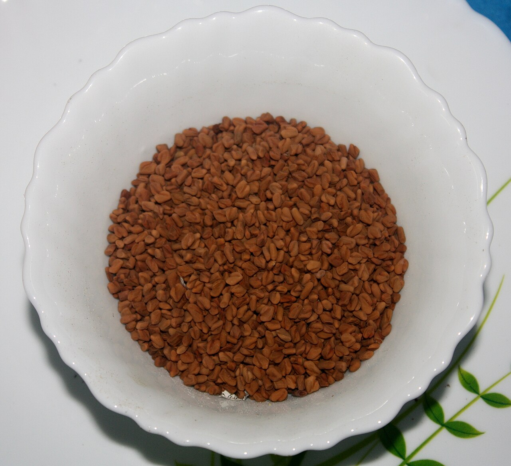
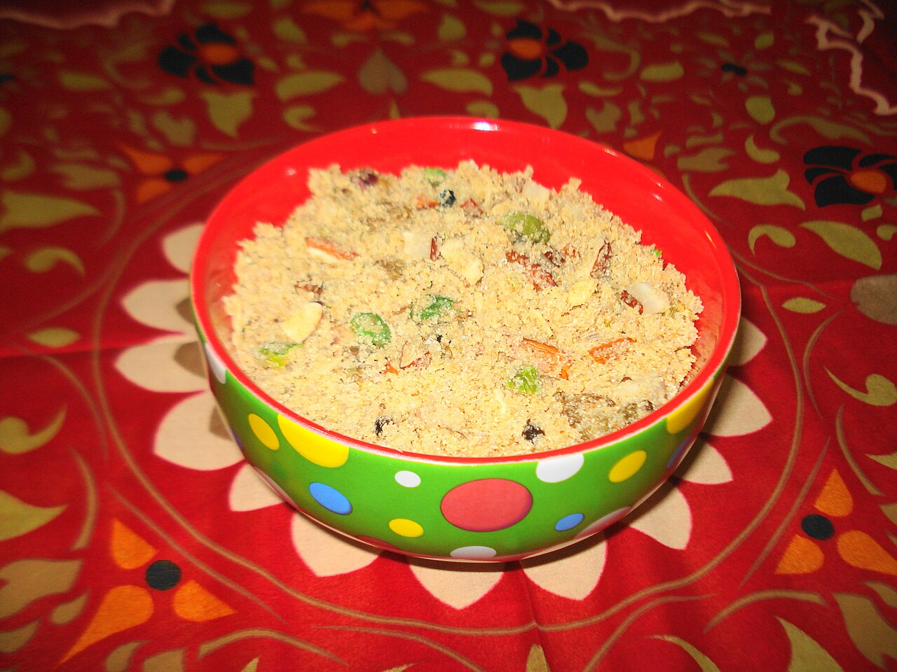
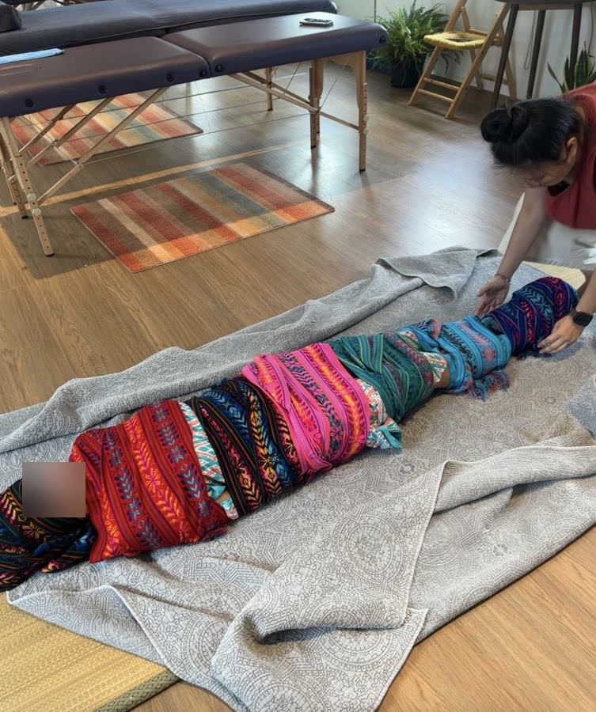

- 每天被抹油的四十天
- 她不是保姆：Dai 的故事
- Jaapa 的廚房，和我想誠實說的事（本篇）
前兩篇寫了印度坐月子的按摩、綁腹、溫水，和那雙手的主人 Dai。
這一篇，我們走進廚房。
胡蘆巴茶：每天早上的那杯
在 Jaapa 的四十天裡，很多媽媽每天早上會喝一杯胡蘆巴（Fenugreek）茶。胡蘆巴是一種帶點楓糖香的小種子，在印度被當成「催奶」的好幫手。

這是我很想誠實說的一段。
2020 年 Cochrane（考科藍）的系統性回顧整理了各種口服催奶物質，結論是：證據的確定性很低。[1] 美國國家衛生院的輔助醫療中心（NCCIH）也寫得很直白：胡蘆巴能不能增加奶量，目前還不確定，研究結果不一致。[2] Cochrane 的作者還提醒，動物研究中胡蘆巴可能影響甲狀腺，值得更多安全性研究。[1]
所以我會這樣說：一杯溫熱的胡蘆巴茶，可以是儀式，可以是溫暖；但如果奶量真的讓妳很焦慮，請找泌乳顧問好好看一次。奶量最常見的關鍵，還是寶寶有沒有有效地吸、多常吸——這部分請交給專業的人一起評估。
Panjeeri：一碗濃濃的愛
另一道經典是 Panjeeri（潘吉里）。把全麥粉用大量的酥油（Ghee）炒香，再加入堅果、可食用的樹膠、種子和香料，做成一種香香的滋補粉。

阿育吠陀看產後，第一件事是「消化之火」（Agni，阿耆尼）變弱了。所以產後飲食的原則是溫熱、容易消化、有油潤，再一步一步加強營養。[3] 酥油在這裡，就是那個「潤」。
我很喜歡 Panjeeri 背後的心意——家裡的長輩一邊炒，一邊說「吃了才有力氣」。那是一碗濃濃的愛。
不過我也會溫柔地提醒：Panjeeri 很濃、很油、熱量很高。產後的腸胃有時候還很弱，從少量開始，跟著自己的身體走，不用一口氣吃完長輩準備的一大罐。
我想誠實說的幾件事
寫這個系列，我一直提醒自己：不要因為愛阿育吠陀，就把所有傳統都說成「好棒」。
所以把散在前兩篇的提醒，整理在這裡：
- 寶寶的按摩油：傳統常用芥末油，但有研究發現它可能影響新生兒的皮膚屏障；葵花籽油在部分研究表現較好，但結果並不一致。[4][5]
- 帶寶寶曬太陽：6 個月以下的寶寶，美國兒科醫學會與 FDA 建議避免陽光直射。[6] 維生素 D 怎麼補，請問兒科醫師。
- 寶寶的「塑型按摩」：有些傳統會擠壓寶寶的頭型與四肢。我自己的原則是：對寶寶只用很輕、很慢的撫觸，不做任何「塑型」的施壓（這是我的謹慎，不是研究結論）。
- 藥煙薰蒸：房間裡燒草藥，我會建議別讓新生兒一直待在煙裡（推測）。
- 綁腹：剖腹產的媽媽，等傷口完全癒合（約 3–4 週）再綁。
說這些，不是要否定傳統。
而是我相信，真正尊重一個傳統，是把它最珍貴的心意留下來，同時願意為眼前這一位媽媽、這一個寶寶，多想一步。
留下來的，是什麼？
讀完印度的 Jaapa，我心裡留下的，不是一張「該做／不該做」的清單。
而是一個畫面：產後的女人，躺在溫暖的房間裡。每天有人為她抹油，有人為她煮一碗熱熱的東西，有人把她的肚子穩穩地綁好，有人說「妳休息，寶寶我抱一下」。
四十天裡，她唯一的工作，就是恢復。

我們其實也有自己的坐月子。
只是仔細對照，會發現兩邊在意的東西很不一樣：
- 天數：我們常說「做滿 30 天」；印度的 Jaapa，一般是 40 天。
- 重心：我們的月子很重「吃」——麻油雞、生化湯、一餐接一餐的月子餐；印度的重心是「觸碰」，每天一場溫油按摩。
- 洗澡：老一輩說月子裡不能洗頭、不能碰水；印度的媽媽反而每天用煮過的溫熱藥草水洗澡。
- 綁腹：我們用買來的束腹帶；印度是一位婦女，用好幾公尺長的布，一圈一圈幫妳綁。
- 陪在身邊的人：我們是婆婆、媽媽，或是月嫂、護理師；印度是 Dai——一位帶著手藝、每天固定出現的人。
這幾年，越來越多媽媽選擇住進月子中心。房間漂亮、設備嶄新，有護理師 24 小時看顧寶寶，像住進一間豪華的飯店。那份安心很重要，我完全明白。
可是我心裡，總覺得有點可惜。
漂亮的房間裡，好像少了一點溫度——少了一雙每天把手放在妳身上的手，也少了那些一代傳一代、關於產後身體的知識。
更別說還有很多媽媽，出院第三天，就開始自己洗衣、煮飯，半夜一個人餵奶。
邀請妳深吸一口氣，問自己一句：
在我的產後，誰是我的 Dai？
如果還沒有，我很願意當那雙手。
我在台北北投和日本逗子，提供阿育吠陀的產後修復：溫油按摩、熱石、藥草球、會陰薰蒸、關骨儀式。現在也在招募 3 位產後一年內的實習個案。如果妳正在產後，或身邊有正在產後的姐妹，歡迎私訊我，我們先聊聊。💛
- 每天被抹油的四十天
- 她不是保姆：Dai 的故事
- Jaapa 的廚房，和我想誠實說的事（本篇）
資料來源
- Cochrane 2020 口服催奶物質系統性回顧（低確定性證據；胡蘆巴甲狀腺疑慮）：NutraIngredients 報導（學術・二手報導，原文待核對）
- NCCIH〈Fenugreek〉：連結（官方）
- Sūtikā Paricaryā 原則（安撫風能、點燃消化之火、滋養）：JAIMS（學術・阿育吠陀期刊）
- 印度北方葵花籽油 vs 芥末油試驗：Stanford Children's 摘要（學術・二手摘要）
- 尼泊爾皮膚屏障研究（兩種油無差異）：BMC Pediatrics（學術）
- FDA × AAP 嬰兒防曬建議：FDA（官方）
圖片來源
- 〈Panjeeri〉，Miansari66，CC0，via Wikimedia Commons
- 〈Fenugreek seeds (মেথি)〉，Atudu，CC BY-SA 4.0，via Wikimedia Commons.JPG)
- 其餘照片：Birth with Milliya 服務現場
本文為資訊整理，不構成醫療建議，也不能取代妳與醫師、助產師、兒科醫師的直接討論。